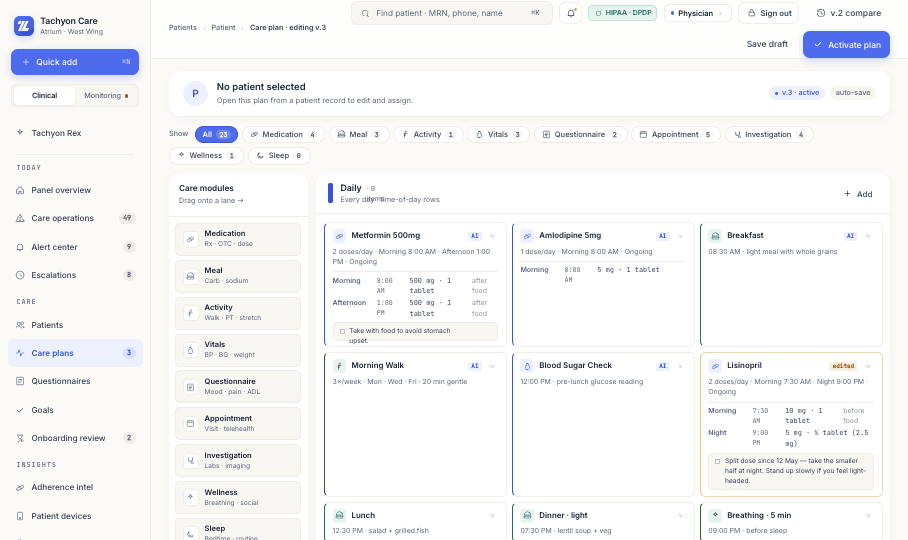
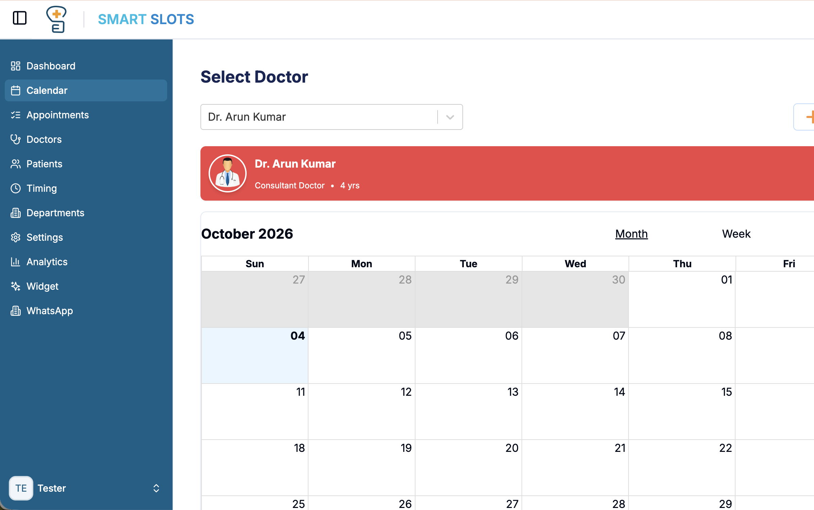

Tachyon Care: Solving the 140-Alarm Sensory Storm in Geriatric Telemetry.
An ambient clinical command console and governed AI copilot (Tachyon Rex) engineered for acute clinical stress. Replaced 40+ raw telemetry graphs with an answer-first Red/Amber/Green urgency matrix, eliminating false alerts across 3 synchronized provider consoles without ever altering care plans without human confirmation.
How We Uncovered the Root Problem in Bedside Shadowing
Before drawing a single wireframe, I conducted 14 hours of continuous night-shift shadowing inside a 32-bed high-dependency residential care facility. What stakeholders thought was a "reporting dashboard need" was actually an acute human sensory-exhaustion crisis.
The 140-Alarm Sensory Desensitization Storm
During an 8-hour shift, coordinators received an average of 140+ telemetry alerts. 84% were transient sensor artifacts or movement noise. Because the legacy UI treated every parameter threshold equally, nurses developed severe sensory adaptation—muting buzzers instinctively without reading the screen.
The EHR vs. Whiteboard State Disconnection
Doctors operated on desktop EHRs; nurse coordinators used physical whiteboards with dry-erase markers; facility admins maintained compliance binders. State updates were delayed by up to 4 hours, forcing nurses to guess whether a doctor had approved an escalation.
Sticky Notes Pasted to Monitor Bezels
Rigid security protocols designed for quiet office environments failed acutely on the hospital floor. In emergency scenarios, nurses had taped yellow sticky notes containing emergency bypass credentials directly onto monitor bezels, completely compromising regulatory privacy.
From Heuristic Breakdown to Shipped Clinical System
How we translated clinical shadowing into an answer-first telemetry system across four structured phases.
Ambient Competitor Benchmark
Audited 6 market-leading ambient care monitoring systems. Cataloged 15 critical feature gaps, specifically the systemic failure to isolate transient artifacts from genuine hemodynamic deterioration.
15-Gap Heuristic MatrixThe RAG Urgency Framework
Synthesized continuous vital telemetry into a deterministic Red / Amber / Green (RAG) urgency matrix. Defined strict intervention windows: Red (<60s response), Amber (15m review), Green (baseline steady state).
Deterministic Triage Model3-Role Console Architecture
Engineered 3 synchronized consoles sharing a live WebSockets telemetry pipeline: Doctor (deep diagnostic drilldowns), Nurse Coordinator (ambient circular radar HUD), Admin (HIPAA audit trails).
Synchronized 3-Console IATachyon Rex Copilot Safety
Co-designed the 3-part explainable AI safety trace with geriatricians. Strictly enforced the Non-Destructive Diff rule: AI proposes actionable care interventions, but requires 1-tap human confirmation.
Governed Copilot SpecificationThe Tachyon Rex Explainable AI Safety Architecture
In geriatric care, black-box AI recommendations are dangerous and legally unviable. We designed Tachyon Rex around an explicit, verifiable 3-step reasoning trace with zero automated mutations.
Autonomous Care Plan Alteration
Allowing the AI model to automatically update resident medication doses or alert external paramedics without bedside human confirmation. Rejected because it induces clinician moral hazard, violates FDA SaMD Class II safety principles, and breeds operator distrust.
Human-in-the-Loop Non-Destructive Diff
The copilot only drafts non-destructive recommendations with primary-source vital telemetry citations. A registered clinician must authenticate the intervention with a single biometric tap, logging the decision for billable clinical time and HIPAA audit compliance.
The Complete Care Continuum: Console & Ambient Radar HUD
Two synchronized production surfaces: the central facility Ambient Radar HUD for ward coordinators, and the high-dependency bedside resident node.

